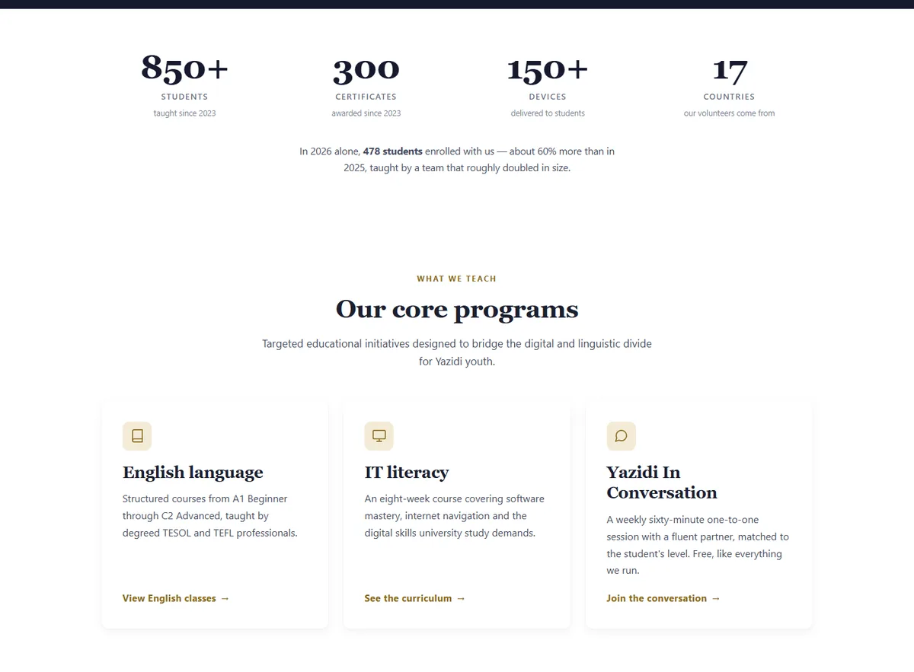
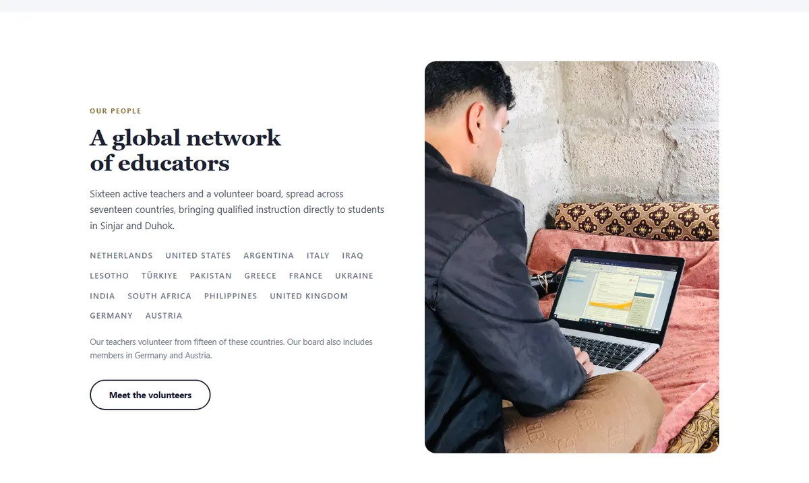
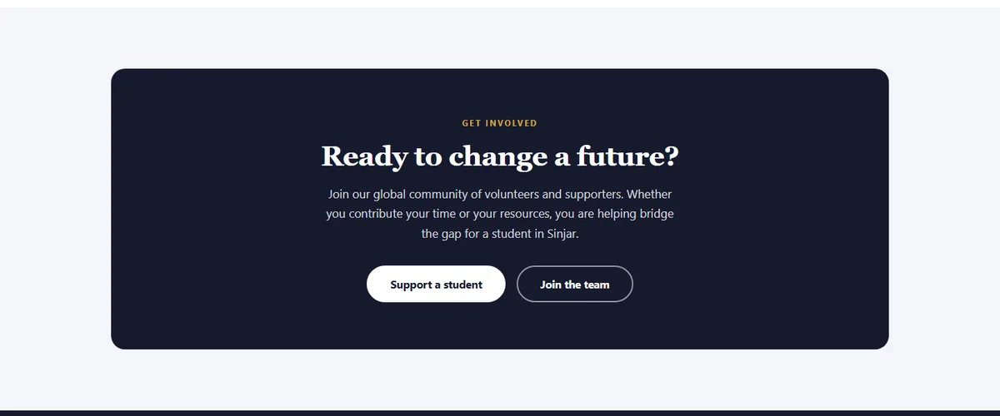

The website of a volunteer-run Dutch charity that gives free online English classes to Yazidi students in Sinjar and Duhok. It has to speak to two very different audiences at once: donors and volunteers around the world, and students and families in Iraq.
My roleDesigner & developer (volunteer)
AudienceDonors, volunteers, students and families
Languages6, through a built-in translation switcher
Home. A clear message and two next steps above the fold, with the Donate button in the header on every page.

Impact and programmes. The charity's results first, then its three programmes, each leading to its own page.

Volunteer network. Shows supporters the team behind the classes, with a route to join it.

Get involved. Every page ends with a way to help.
What the site needed to do
A small charity run entirely by volunteers depends on its website to find donors, recruit teachers and enrol students, with no staff to answer questions one by one. The site has to earn trust quickly, explain the Yazidi community's situation, and make every next step obvious.
A structure for each audience: About, The Yazidis, Classes, Get involved and News, so donors, volunteers and students each find their path.
Donation and volunteering one click away, with the Donate button in the header of every page.
Student registration and a contact form, so enquiries arrive in one place.
Links into Moodle, the platform where the classes actually run.
Six languages, including Arabic and Kurdish for families, and Dutch and German for supporters in Europe.
Responsive design that works on the phones most students use.
UX/UIResponsiveMultilingualDonationsMoodle
The charity, in numbers
as shown on the site
850+students taught since 2023
300certificates awarded
150+devices delivered to students
17countries our volunteers come from
These are the charity's results, as published on yazidiatschool.org. Alongside the website, I volunteer on the technical side: running Moodle for teachers and students and setting up digital classrooms.
What the client says
“Nasr designed and built our website and looks after the technical side of our classes as a volunteer. He understands both our donors in Europe and our students in Sinjar.”